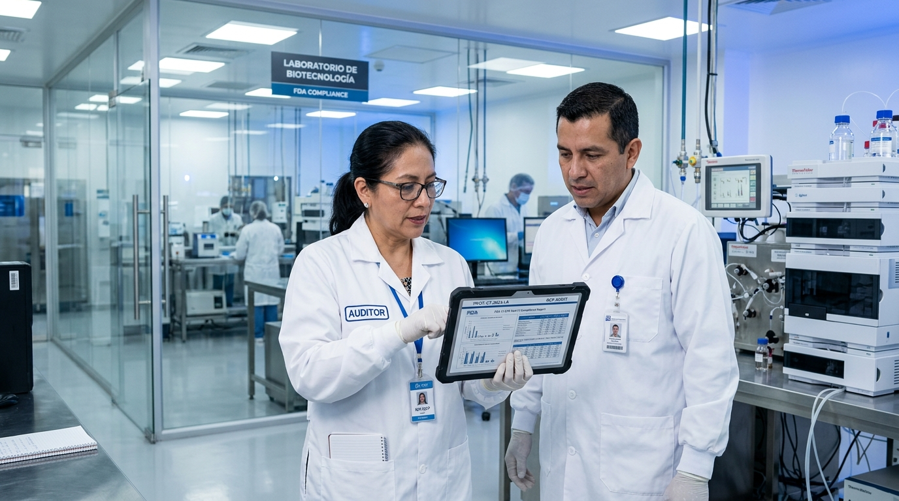

Why run clinical trials in Latin America
A 650M+ patient pool that is under-enrolled relative to its size, regulatory start-up from 2.8 months, and 60–70% of U.S. cost — in your time zone. Every figure on this page is sourced.
Meet our ExpertsWhy Latin America
Enrollment, not science, is what delays trials
Roughly 80% of clinical trials fail to meet their enrollment timelines, and up to half of research sites enroll one patient or none at all. A delayed launch can cost as much as $8M in lost revenue per day.1 Where you place a study has stopped being a cost decision and become a timeline decision.
~80% Trials missing enrollment timelines1
Up to 50% Sites enrolling one patient or none1
$8M Lost revenue per day of delay1
The patients are there, and under-enrolled
Latin America holds more than 8% of the world's population but hosted only about 3.6–5% of global oncology trials in 2023.2 The region's patient pool is proportionally far less recruited than its size would suggest: 650M+ people, over 80% of them urban, with treatment-naïve populations available to sponsors.3
It is also among the most ancestrally admixed regions on the planet. Three-way continental admixture — Native American, European and African — is documented across Brazil, Chile, Colombia, Mexico and Peru in a study of 7,342 individuals, with wide variation both between and within countries.8 For sponsors who need enrollment that reflects real-world patient diversity, that representativeness is structural here rather than something engineered site by site.
Two hemispheres, one shorter calendar
For influenza, RSV and other seasonal indications, the Southern Hemisphere winter runs roughly six months offset from the Northern one. Sponsors can run a parallel cohort here while their U.S. and European sites wait for the season to arrive, opening two enrollment windows in the same year instead of waiting a full cycle for the second.9
~6 mo Calendar offset vs Northern Hemisphere
2x / yr Seasonal enrollment windows9
Lower cost, same time zone
Sponsors in Brazil and Argentina typically pay 60–70% of equivalent U.S. costs.3 Latin America also shares U.S. time zones, so the savings don't cost you real-time collaboration. And this is not a shrinking market: regional clinical trial spend is projected to grow from about $1.5B in 2025 to $2.8B by 2033, an 8.2% CAGR, with Argentina expected to post the fastest growth in the region.4
MedTech is where the region is professionalizing fastest
Latin America accounted for 2.1% of the global medical device clinical trials market in 2024 — about $357M, projected to reach $457M by 2030 — and within that, pivotal studies are both the largest segment at 42.4% and the fastest growing, with Brazil expected to lead regional growth.5 Pivotal device work is exactly the kind that has to survive an FDA inspection, and it is the work LatinaBA has already had inspected.9

The rules are getting faster, not slower
Brazil's Law 14.874/2024, enacted in May 2024 and in force since that August, gives the regulator 90 business days to respond to a trial application and lets studies start on local ethics committee review alone — removing a layer that used to define Brazilian start-up.6 Decree 12.651/2025 then regulated the Act, creating the national research ethics system (SINEP) and detailing review timeframes.7 Every country in the region operates under ICH-GCP with active inspection systems,9 and sponsors already trust LatAm with pivotal work: the region carries roughly 15.6% of global Phase III oncology trials, even while early-phase activity stays thin.2
Why LatinaBA
Six different start-up clocks, and where we sit on them
"Latin America" is not a single regulatory environment. Median time from submission to first patient ranges from under three months to nine.2 That spread is the most important variable in a regional feasibility decision. Below is where each country sits, and where LatinaBA holds its own legal entity and staff versus working through vetted IoR partners.
| Country | Regulatory start-up2 | 0 – 9 months | LatinaBA presence9 | Team on the ground9 |
|---|---|---|---|---|
| Mexico | 2.8 months | Own legal entity | 7 — PM, CRA & RA | |
| Argentina | 4.5 months | Own legal entity — Operations HQ | 19 — PMs, CRAs, RA, CTAs, QA | |
| Chile | 4.6 months | Own legal entity | 3 — RA & CRA | |
| Brazil | 4–7 months | Own legal entity | 17 — PM, CRA, RA & CTAs | |
| Colombia | 7.0 months | IoR partner | 2 — CRA | |
| Peru | Up to 9 months | IoR partner | Via partner network |
Start-up columns are published medians for trial activation2 and are indicative, not commitments — actual timelines depend on indication, site mix and submission quality. Where a range is reported, the bar reflects its midpoint. Presence and headcount are LatinaBA's own operational records.9 Beyond the four countries where it holds its own legal entity, LatinaBA operates a U.S. contracting hub (LATINABA LLC) and has run studies in Ecuador, Venezuela, Panama, Costa Rica, Paraguay, Bolivia, Belize and Uruguay.9
Where it gets hard, and how we clear it
The table above is also the honest version of the argument: on those published medians, a study placed in Peru or Colombia can wait roughly two to three times longer to activate than the same study in Mexico.2 Regulatory timelines and customs are where trials lose time in this region, and neither is solved remotely. LatinaBA runs in-country regulatory experts who get submissions right the first time and dedicated customs brokers who handle import/export country by country, so the friction is absorbed before it reaches your timeline.9
One team, for the life of the study
Our own record is auditable: an FDA PMA inspection in Chile for a Class III device that closed with No Action Indicated, and an FDA inspection of a biologic study that closed with no findings — both as top recruiter. Behind that sits a quality system of 60+ validated SOPs and policies, tested by more than 50 capability audits.9
LatinaBA works in Spanish, English and Portuguese across four countries where it holds its own legal entity, so if one agency slows down, your study keeps moving through another. Sponsors keep the same point of contact from start to finish, with a direct line to senior management rather than a rotating account team.9
Talk to our teamSources
- Clinical trial delays: America's patient recruitment dilemma — Clinical Trials Arena. Read source. Used for: share of trials missing enrollment timelines, share of sites enrolling one patient or none, and revenue lost per day of delay.
- Reframing Clinical Research in Latin America — peer-reviewed, PubMed Central. Read source. Used for: regional share of world population, share of global oncology trials (2023), share of global Phase III oncology trials, and country-level regulatory start-up medians. The 3.2× spread is calculated from those medians (9.0 ÷ 2.8).
- Latin America: A Compelling Region To Conduct Your Clinical Trials — Clinical Leader. Read source. Used for: regional population and urbanisation rate, treatment-naïve populations, and the 60–70% cost differential versus the United States.
- Latin America Clinical Trials Market Size & Outlook, 2033 — Grand View Research. Read source. Used for: regional clinical trial market size (2025 and 2033), the 8.2% CAGR, and Argentina as the region's fastest-growing market.
- Latin America Medical Device Clinical Trials Market Size & Outlook, 2030 — Grand View Research. Read source. Used for: the region's 2.1% share of the global device-trial market (2024), market size for 2024 and 2030, the 42.4% pivotal-study share, and Brazil as the fastest-growing device-trial market.
- New Law Expected To Boost Clinical Research In Brazil — Clinical Leader. Read source. Used for: Law 14.874/2024, its enactment in May 2024 and entry into force 90 days later, the 90-business-day regulatory response window, and the move to local ethics committee review.
- Brazil Regulates Clinical Research Act: A Complete Review of Decree #12,651/2025 — RNA Law. Read source. Used for: Decree 12.651/2025, the creation of the National System of Ethics in Research (SINEP), and the regulation of review timeframes.
- Ruiz-Linares A, et al. (2014). Admixture in Latin America: Geographic Structure, Phenotypic Diversity and Self-Perception of Ancestry Based on 7,342 Individuals — PLOS Genetics. Read source. Used for: three-way continental admixture (Native American, European, African) across Brazil, Chile, Colombia, Mexico and Peru, and the variation between and within countries.
- LatinaBA operational records and Corporate Presentation, May 2026 — internal, available on request. Used for: legal entities and headcount by country, working languages, FDA PMA inspection in Chile closing with No Action Indicated, FDA inspection of a biologic study closing with no findings, quality system scope (60+ validated SOPs, 50+ capability audits), ICH-GCP operation and inspection systems across countries of operation, Class I–III device experience, seasonal enrollment practice, and the customs and regulatory-timeline friction points described in section 08.
How to read the citations. Every figure and factual claim on this page carries a superscript linking to the source it comes from. Claims drawn from LatinaBA's own operational records are marked as such rather than dressed up as third-party research.
Geographic and calendar facts — that the region shares U.S. time zones, and that Southern Hemisphere seasons run about six months offset from Northern ones — are not cited.
Market projections are third-party forecasts, not guarantees. Regulatory start-up figures are published medians and are indicative; LatinaBA does not present them as commitments for any specific study.
Last reviewed: August 2026.